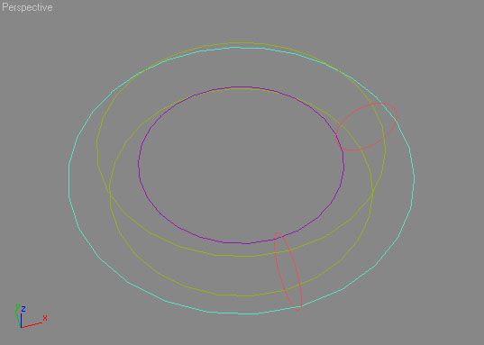
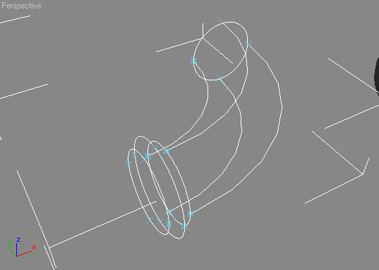
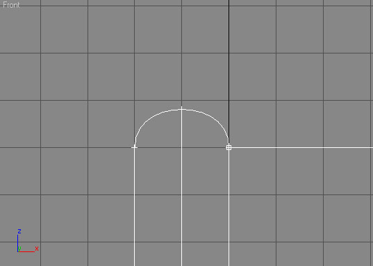

Creating A Rounded Mesh Using Splines
This tutorial will cover creating a 90 degree pipe that goes with the T-Section pipe we created in the Creating A Simple Mesh Using Splines tutorial.
Preface
I will only be introducing one new element into spline modeling: Bezier lines. Bezier lines allow you to control the shape of a line, which is exactly what we want to do to create rounded objects.
Also, all of the cloning/edits I mention are done in the top view unless otherwise stated.
What are these Bezier Lines you speak of?
See also  Bezier curve
Bezier curve
You've been working with them all along, just not knowingly. Circles are a form of Bezier splines. If you ever clicked on the vertex of a circle you would of noticed that two little green squares with a yellow line connecting them would of appeared around the vertex. These are called handles. By moving these handles you can change the shape of the curve on the spline.
Setting it Up
Use the same settings as stated in the Simple Mesh tutorial (16 Grid, Grid snap on).
Lets start off by creating a circle with a radius of 64 (Same radius as the pipe in the previous tutorial). Convert it to an editable spline and go into element. Select the circle and clone it over and up 256 Units (256 units right, 256 units up). Now rotate it 90 degrees. We have now created the beginning and end of the 90 degree pipe.
Now, lets create the splines to connect the two pieces. Since this is an even 90 degree piece, this will be very easy. Draw 3 circles from the midpoint of the existing circles(From the left circle go up until it is parallel with the other circle, draw the new cirles from there) Create the circles so that they line up with the existing circles. Take the circle in the middle and clone it down so it lines up with the bottom of the circle, and move the circle that you clone from up so it lines up with the top of the pipe beginning / end. You should now have something like this:

Note the extra part of the circles, they need to be removed to leave just a 90 degree section |
Now you'll need to shave off the extra parts of the circles. First you should select the pipe beginning/end object and attatch all the loose circles to it (The surface tool only works on a single object). Now go into segment select mode and select all those extra loose segmenets and delete them. Hmm it looks like a rounded pipe to me  . Lets make a Referenced clone and apply the surface modifier so we can see our curved pipe.
. Lets make a Referenced clone and apply the surface modifier so we can see our curved pipe.
Spicing up the pipe
Right now, the pipe is pretty boring, so lets add rounded flanges on the end. This is a lot easier than it sounds. Remember, you don't have to do anything to make the referenced surface update, it'll do it by itself as you edit. You need to be in element edit mode(with the spline object selected) while doing the following.
Lets start by cloning the end circle over twice, 16 units each time. Now lets uniformly scale the circle upwards by 120 (Look at the XYZ fields at the bottom of the screen for the scale factor). You should now have this:

|
The next part is a little tricky. We need to look in the front view and draw a circle using the edge creation method, and drag from left to right to connect the two shorter circles. Now attatch the newly created circle. As you may of noticed, the top of the is slightly taller then the circle we scaled by 120 earlier. To remedy this, cut endpoint snapping on and drag the small circle's vert to the top of the largest circle's vert. If done correctly they will snap and line up exactly(Cut endpoint snapping off when you aren't using it). Now is a good time to delete the extra lower half of the circle.
You may of noticed that the circle may not be in a shape you exactly like. You can change the shape by moving the handles on the circle's verts. Play around with them and you will get the shape you want. Mine turned out looking like this:

Keeping the small piece lined up is the hardest part, but EndPoint snapping makes it a lot easier |
Now, clone the circle we just made to the other parts of the circle. (3 times in all, the left, right, and bottom) Remember to rotate it 90 degrees each time to line it up, and if you have problems lining it up, use endpoint snapping to snap the small piece like you did on the top. (Select the top vert at the top of the half-circle, drag it to the vert of the big circle). If everything went well, you should be able to look at your referenced mesh and see the flange at the end of it. As you may of noticed, the concentration of polygons on the flange is very high. Lets use a less polygon intensive method on the other side.
Lets begin making our lower-poly flange by copying the top circle end up 32 units. Next use create line tool to draw a line between the top two verts of the two circles. "But that doesn't look very round to me, and when I click on the verts of the line I don't see any handles?". Right you are, we are about to do something about that. You need to select both verts of JUST the line we created. To make this easier, under Selection in the Editable Spline check Segment End. This allows you to click on the segment and it selects the nearest vert that belongs to it. Hold control and select both verts of the line. After doing so, hold control and right click ON one of the verts. This will pop of a new menu. Go to Edit/Edit Spline Menu→Bezier. This converts the verts from corner to Bezier. Now you will be able to give the spline a nice curve by dragging the handles. Mine ended up like this:
![[spine_rpipe_4]](images/spine-rpipe-4.jpeg) Handles do not make the line go exactly to their position, they only make the line 'lean' that way |
All thats left to do is clone / rotate it like you did for the other end. The entire scene ended up looking like this:
![[spine_rpipe_5]](images/spine-rpipe-5.jpeg) The flange on the right side is much more reasonable to be used |
Notice how the second spline method we used resulted in less polys, and fits better with the polygon concentration of the rest of the object. Some would even suggest adding in second circle in the middle of the bend so the bend would be smoother. I'll leave that to you as a bonus exercise (Hint, you'll have to divide the long splines that make the bend)
Wrapping it Up
In this tutorial we created a curved pipe and added rounded flanges using the basics of Bezier splines. I hope you learned much from this tutorial. Remember, using Max is a learning experience. I learn something almost every time I use it. For example, I never knew that you could convert Spline types using a menu until today. (Holding Control, Shift, or Alt all pop up different right click menus)
Sorry if the tutorial was a little vauge in places. The subject is a little hard to explain. As usual, I'm open to suggestions / comments —Dr.Nick
Legal: Suggestion moderators (GodKings): Move this page to the 3DSM part of the Wiki.
Wormbo: Just link it from there.
Tarquin: Not sure what '3dsm' is – link it from Modeling?
Legal: Neither am I, but I got confused (thought it was another fancy UED3 thing) so move to Modelling/Spline... please.
Tarquin: I prefer not to have subpages unless they're clearly related. There aren't any "areas" of the wiki – you create strcture by making links.
Foogod: I assume that "3DSM" is 3D Studio Max, which is pretty clearly the specific modelling program this tutorial is geared at. Given the required context, I actually think this would make sense as a subpage for that modelling program, since it's probably not that useful (and potentially rather confusing) for anybody using other software. At the very least, there should be some mention somewhere of what program this thing is assuming the reader is using..